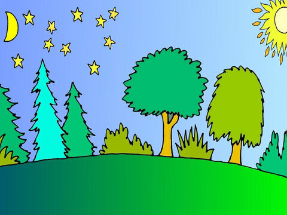
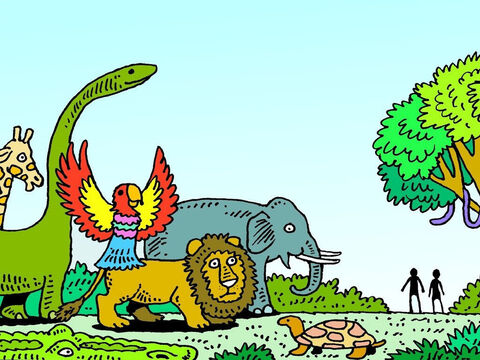
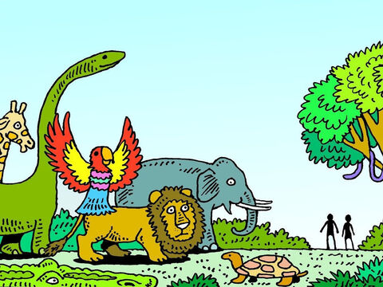

In the beginning
Day 1

Genesis
1 In the beginning God created the heaven and the earth.
2 And the earth was without form, and void; and darkness was upon the face of the deep. And the Spirit of God moved upon the face of the waters.
3 And God said, Let there be light: and there was light.
4 And God saw the light, that it was good: and God divided the light from the darkness.
5 And God called the light Day, and the darkness he called Night. And the evening and the morning were the first day.

Day 2
Genesis
6 And God said, Let there be a firmament in the midst of the waters, and let it divide the waters from the waters.
7 And God made the firmament, and divided the waters which were under the firmament from the waters which were above the firmament: and it was so.
8 And God called the firmament Heaven. And the evening and the morning were the second day.

Day 3
Genesis
9 And God said, Let the waters under the heaven be gathered together unto one place, and let the dry land appear: and it was so.
10 And God called the dry land Earth; and the gathering together of the waters called he Seas: and God saw that it was good.
11 And God said, Let the earth bring forth grass, the herb yielding seed, and the fruit tree yielding fruit after his kind, whose seed is in itself, upon the earth: and it was so.
12 And the earth brought forth grass, and herb yielding seed after his kind, and the tree yielding fruit, whose seed was in itself, after his kind: and God saw that it was good.
13 And the evening and the morning were the third day.
Day 4

Genesis
14 And God said, Let there be lights in the firmament of the heaven to divide the day from the night; and let them be for signs, and for seasons, and for days, and years:
15 And let them be for lights in the firmament of the heaven to give light upon the earth: and it was so.
16 And God made two great lights; the greater light to rule the day, and the lesser light to rule the night: he made the stars also.
17 And God set them in the firmament of the heaven to give light upon the earth,
18 And to rule over the day and over the night, and to divide the light from the darkness: and God saw that it was good.
19 And the evening and the morning were the fourth day.

Day 5

Genesis
20 And God said, Let the waters bring forth abundantly the moving creature that hath life, and fowl that may fly above the earth in the open firmament of heaven.
21 And God created great whales, and every living creature that moveth, which the waters brought forth abundantly, after their kind, and every winged fowl after his kind: and God saw that it was good.
22 And God blessed them, saying, Be fruitful, and multiply, and fill the waters in the seas, and let fowl multiply in the earth.
23 And the evening and the morning were the fifth day.

Day 6

Genesis
24 And God said, Let the earth bring forth the living creature after his kind, cattle, and creeping thing, and beast of the earth after his kind: and it was so.
25 And God made the beast of the earth after his kind, and cattle after their kind, and every thing that creepeth upon the earth after his kind: and God saw that it was good.
26 And God said, Let us make man in our image, after our likeness: and let them have dominion over the fish of the sea, and over the fowl of the air, and over the cattle, and over all the earth, and over every creeping thing that creepeth upon the earth.
27 So God created man in his own image, in the image of God created he him; male and female created he them.
28 And God blessed them, and God said unto them, Be fruitful, and multiply, and replenish the earth, and subdue it: and have dominion over the fish of the sea, and over the fowl of the air, and over every living thing that moveth upon the earth.
29 And God said, Behold, I have given you every herb bearing seed, which is upon the face of all the earth, and every tree, in the which is the fruit of a tree yielding seed; to you it shall be for meat.
30 And to every beast of the earth, and to every fowl of the air, and to every thing that creepeth upon the earth, wherein there is life, I have given every green herb for meat: and it was so.
31 And God saw every thing that he had made, and, behold, it was very good. And the evening and the morning were the sixth day.
 
